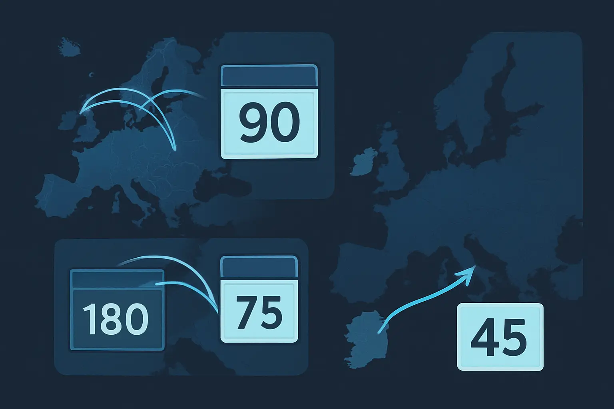

Schengen 90/180-Day Rule Explained
How the rolling window works, how to count your days, and how to avoid overstaying.
Last verified: March 2026
What is the 90/180-day rule?
Non-EU citizens visiting the Schengen Area can stay for a maximum of 90 days within any 180-day rolling window. This applies across all 29 Schengen countries combined — days in France, Germany, and Spain all count toward the same 90-day limit.
How the rolling window works
The 180-day window is not a fixed period. It rolls forward with each day. On any given day, border officials look back 180 days and count how many of those days you spent in the Schengen Area. If it's 90 or more, you cannot enter.
This is where most people get confused. It's not "90 days per half-year" — it's a continuous sliding window that moves with you.
Example
- You arrive in Spain on January 1 and leave on March 31 — that's 90 days used.
- On April 1, you look back 180 days (to October 4 of the previous year). Your 90 days from Jan–Mar are all within this window, so you have 0 days remaining.
- On April 2, October 5 drops out of the window — but that doesn't help because your first day (Jan 1) is still within the 180-day lookback.
- You can re-enter on July 1, when January 1 finally falls outside the 180-day window, and days start freeing up one by one.
The common mistake: thinking you can do "90 days in, 90 days out, repeat." This doesn't always work because the window is rolling, not fixed. Depending on your travel pattern, you may need to wait longer than 90 days before your full allowance resets.
Which countries count?
All 29 Schengen member states share the same 90/180 counter. Days in any of these countries are added together:
Austria, Belgium, Bulgaria, Croatia, Czech Republic, Denmark, Estonia, Finland, France, Germany, Greece, Hungary, Iceland, Italy, Latvia, Liechtenstein, Lithuania, Luxembourg, Malta, Netherlands, Norway, Poland, Portugal, Romania, Slovakia, Slovenia, Spain, Sweden, and Switzerland.
How to count your days correctly
- Both entry and exit days count. If you arrive on the 1st and leave on the 3rd, that's 3 days — not 2.
- Count across all Schengen countries combined, not per country. A week in France and a week in Italy is 14 days, not two separate 7-day counters.
- Use the rolling method: for any given date, look back 180 days and total the days you were present.
- Airport transits do not count if you stay in the international zone and do not clear immigration.
Doing this manually with a spreadsheet is possible but error-prone — especially with multiple short trips across different countries. Each new trip changes the math for every future date.
Common scenarios that trip people up

- Multiple short trips: five weekend trips to different Schengen countries are easy to forget. Each one eats into the same 90-day allowance, and the rolling window means old days free up at unpredictable intervals.
- Trips that straddle the window boundary: if a trip started inside the 180-day window but ended outside it, only the days within the window count. This is where manual counting gets unreliable.
- Non-Schengen EU countries: Ireland is in the EU but not in the Schengen Area. Days in Ireland do not count toward your 90-day Schengen limit. Cyprus and Romania's status can also cause confusion — both are now Schengen members as of recent years.
What happens if you overstay?
Consequences vary by country but can include fines, deportation, future visa refusals, and multi-year entry bans. Germany and the Netherlands are known for strict enforcement. Southern European countries may be more lenient in practice, but overstays are still recorded in the Schengen Information System and can affect future travel across all member states.
Even a single day over the limit creates a record. The safest approach is to know your exact count before you travel, not after.
Stop counting manually
AtlasDays lets you log your trips once and tracks your rolling 90/180 window automatically — no formulas, no guesswork.
Track your Schengen days automatically
AtlasDays counts your rolling visa window so you don't have to.
Join the waitlist